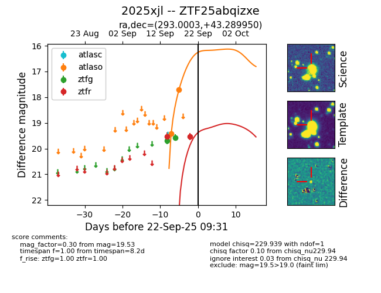

FINK: ZTF25abqizxe
Lasair: ZTF25abqizxe
ALeRCE: ZTF25abqizxe
TNS: 2025xjl
YSE: 2025xjl
ZTF25abqizxe (ztf,fink)
2025xjl (tns,yse)
equatorial (ra, dec) = (293.0003,+43.28995)
galactic (l, b) = (75.9545,+11.45535)

last atlaso=17.72, ztfg=19.57, ztfr=19.53
2 atlaso, 2 ztfg, 2 ztfr detections